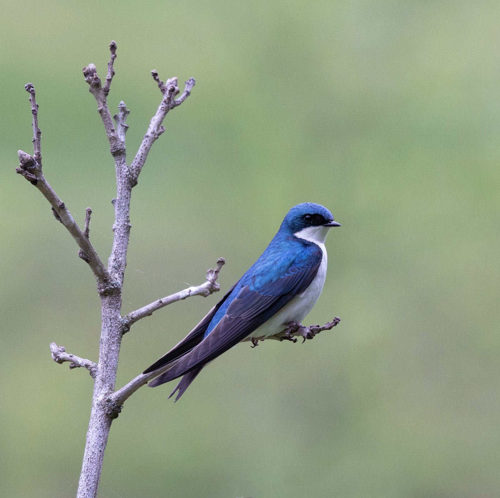

EAST is a non-profit community group founded in Botetourt County, Virginia.
Mission —
To promote enjoyment of clean air, waterways, land, and history for perpetuity.
- Recognizing the dignity of humans and their rights are both important.
- Community members need opportunities to be informed, heard, vote, and elected, to stop environmental destruction proposed by greedy exploiters.
- Central to our work are learning, advocating, and making spaces to share information.

Tree Swallows are often seen at Botetourt’s Greenfield. These migratory birds feed on insects near the wetlands and nest in tree cavities. Like other obviously present species, the Tree Swallow was omitted from Google’s applications for government permits to impact the wetlands to construct dirty hyperscale data centers. Permission to impact Greenfield wetland has NOT been granted.
The public should continue to inform the US Army Corps of Engineers of new information, concerns, and questions AND request a Public Hearing. We deserve to be heard.
A Tree Swallow can’t write a letter or email, but we can!
Risks to human environment and history are obvious — what you can do about it.
Natural Gem — Botetourt County
Learn about one of the most beautiful places in the world, where a diverse rural community is working together to save their home.
Botetourt and Roanoke Deserve a Clear Picture of Project Raspberry Permitting Timelines
Records show confusing federal and state permitting processes, and rushed county-level approvals that undermine environmental protection.
Team goal — we still have to explain thisMore from other newsrooms
Interim: links out until we have a dedicated writer. Replace with EAST reporting as it is written.
- The Roanoke Times Coverage of the Botetourt data center proposal
- Cardinal News Reporting on Virginia data centers, water, and power
- Virginia Mercury State permitting and utility coverage
- WDBJ7 / WSLS Local broadcast coverage of county meetings
Our mission & principles
EAST works for environmental stewardship, transparency, accountability, informed public participation, and responsible and collaborative decision-making. We research the record, review the technical and regulatory details, educate the public, build coalitions, and engage in lawful advocacy on the issues that affect our communities and our environment.
- Accuracy What we say is grounded in documents, facts, and analysis we clearly label as our own.
- Independence EAST is an instrument of power through knowledge — never an instrument for another politician's or organization's agenda. We set our own priorities.
- Transparency How contributed funds — and anything produced with them — are used should be clear to members and supporters.
- Public service EAST's work is undertaken for community benefit, not private gain.
- Advocacy EAST petitions, comments, educates, investigates, organizes, and advocates.